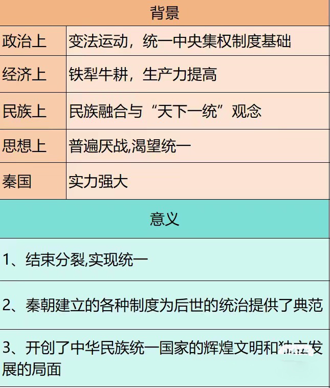

各項統一事項

中央集權：
秦朝實施了強大的中央集權制度。皇帝集政治、軍事、經濟和文化權力於一身，任命官員，制定法律和政策。這種集權體制使得秦朝能夠有效地統一國家，加強中央對地方的控制
行政區劃：
秦朝實行的行政區劃體系稱為「郡縣制」，將全國劃分為一系列郡和縣。每個郡由一位太守負責，每個縣由一位縣令負責。這種行政組織體系有效地管理了廣大的國土，確保了統一的統治
推行法律統一：
秦朝實行統一的法律制度，以統一法律為基礎。秦始皇下令將各國的法律統一為一部法典，稱為「秦律」。這一法典對全國實行，確保了法律的統一和執行的一致性
貨幣統一：
秦朝實行統一的貨幣制度，引入了統一的貨幣稱為「半兩」。秦朝統一貨幣促進了貿易和經濟的發展，簡化了交易過程，加強了中央政府對經濟的控制
標準文字：
秦朝統一了文字，推行了統一的文字標準，稱為「小篆」。這種標準文字統一了全國的文字表達方式，方便了行政、教育和文化交流，促進了國家的統一和發展
運河與道路建設：
秦朝進行了大規模的運河和道路建設，連接各地，促進了交通和物流的發展。其中最著名的是修築的「秦始皇陵連接道路」（即現代的秦始皇兵馬俑遊覽路），該道路連接了首都咸陽和秦始皇陵，成為一個重要的交通通道
律令制度：
秦朝實施了律令制度，將法律與具體的條文相結合，明確規定了各種罪行和相應的刑罰。這種制度的實施使得刑罰更具體、統一，加強了對社會秩序的控制
農業改革：
秦朝進行了一系列的農業改革，推行均田制，將土地平均分配給農民，減輕了負擔並提高了生產效率。這種改革促進了農業的發展，增加了國家的糧食供應